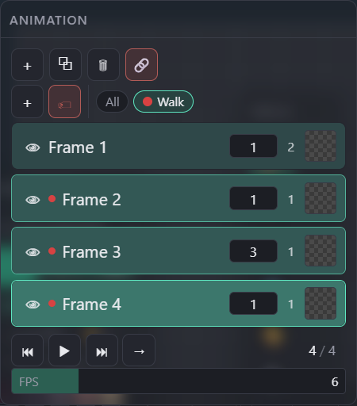

Panels
Animation
A shared frame strip that any layer can link into, named frame actions to hold several logical animations (walk, idle, attack…) on that one strip, and a transport with Forward / Reverse / Ping-pong playback.
← Interface overviewThe panel
Two layers, four frames — a named action ("Walk") covering the last three, Frame 3 held for 3 units instead of 1.

Add / Duplicate / Delete frame, and 🔗 Link — links every selected paint layer (folders expand to their nested paint layers) to every selected frame; turns red ("unlink") once the whole selection is already linked.
＋ creates a named action from the current selection; 🏷 assigns/unassigns frames to the active one. Chips scope Play/export to just their frames — see states below. Sprite frame blocks can be inserted here by dragging a sprite layer (Canvas-as-sprite) from the Layers panel onto a frame; a modal lists named actions from the sprite's target canvas — pick one to insert that action's frames as a live-linked, locked block showing the sprite's sub-frame behavior synchronized to the host timeline. No named actions on the target canvas → its whole timeline inserts directly as the block, no modal. Each block also gets its own chip here (one per block instance, even for repeated copies of the same action) — click to jump to its frames. Block frames show the sprite's own image, only their eye is editable (no opacity/duration), highlight in the block's own color, and delete as a whole via the normal frame-delete; a collapsed block's merged cell shows its first sub-frame at rest and the currently playing one during playback.
Same row component as Layers: 👁 visibility, a colored dot when the frame belongs to an action, drag horizontally for opacity / vertically to reorder, Shift+drag to copy, double-click (or F2) to rename.
Hold units at the current FPS (1–999, default 1). Frame 3 here is set to 3 — it stays on screen 3× longer than the others during playback.
Click selects those layers in the Layers panel; Ctrl+click unlinks every layer from the frame(s) in one step. Frame 1 shows 2 (both layers), the rest show 1 (just the layer active when they were added).
⏮/⏭ step through visible frames; ▶ plays/stops; the mode button cycles Forward → Reverse → Ping-pong.
Playback speed, 1–30 (default 6) — multiplied by each frame's own duration to get its hold time.
Frame-action chips, at a glance:
Playback modes
Click the mode button (next to ▶) to cycle. Needs at least 2 project frames, and at least one visible frame with a linked layer, to start playing at all.
- Default. Plays frame 1…N, loops back to 1.
- Plays N…1, loops back to N.
- Plays forward to the end, then backward to the start, repeating — no jump cut at the loop point.
- Select just that chip (plain click when nothing else is selected, or Ctrl+click to solo it) before pressing ▶ — Play/export follow the active scope, not the full timeline.
Gestures & shortcuts
- Drag horizontally — set this frame's opacity (applied when it's the focused frame)
- Drag vertically — reorder
- Shift+drag — drop a copy instead of moving
- Double-click name, or F2 — rename
- Drag across several eyes — mass-toggle visibility
- Click — select those layers in the Layers panel
- Ctrl+click — unlink every layer from the selected frame(s)
- Click — solo this action (or, if it's the only one selected already, toggle fold/unfold)
- Shift+click — add/remove from the play/export scope
- Ctrl+click — exclusive solo (disables every other action)
- Ctrl+Shift+click — add to the solo set without dropping the others
- Hold (~500ms) — delete the action (member frames stay, just unassigned)
- Drag — reorder the chip strip
- P — play / stop
- ← / → — previous / next visible frame
- Add / duplicate / delete frame, frame actions, and the mode cycle have no default hotkey — toolbar/pointer only.